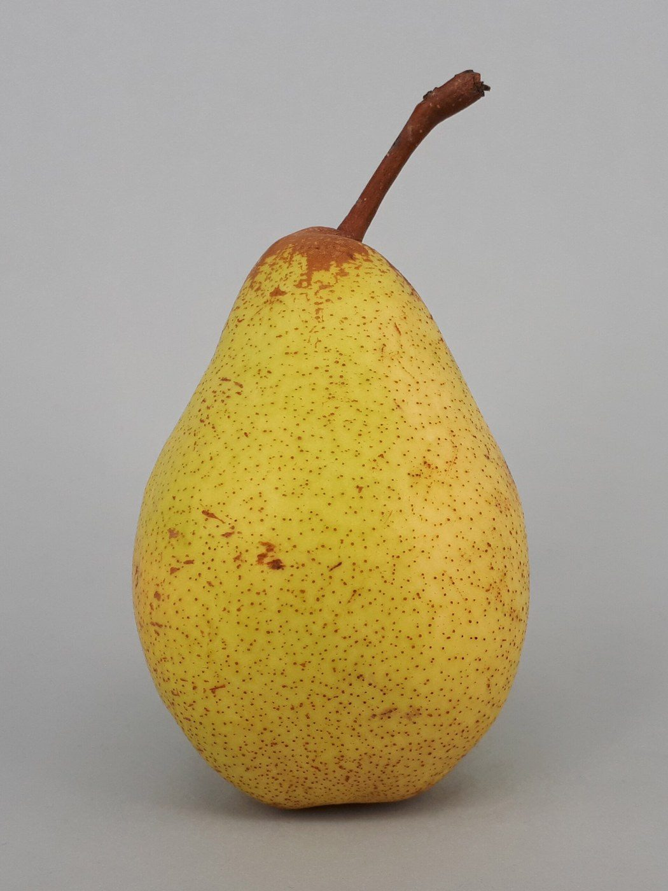

カフェ
Blue Line Garage Cafe 18
カフェ「Blue Line Garage Cafe 18」のご案内ページです。営業時間やメニューなど、詳しいことは準備中。まずはInstagramをのぞいてみてください。
トルクレンチの部位の配置図
図1 トルクレンチを横から見たところ(番号は下の凡例)


制作側の連想
トルクレンチの部位を、配置図にしてみる
トルクレンチの部位を図にしたもので、制作側の連想です。お店の理念・由来とは無関係で、実際の製品の仕様を示すものでもありません。 六つの部位に番号をふり、上の図と並べています。
凡例
六つの部位
- 1ヘッド先端にある丸みのある部分で、中にラチェットの仕組みを収めている。
- 2角ドライブヘッドから出ている四角い突起で、ソケットをここに差し込む。
- 3切り替えレバーヘッドについた小さなつまみで、締める向きと緩める向きを切り替える。
- 4シャフトヘッドとグリップをつなぐ細長い棒で、手の力を先端へ伝える。
- 5目盛り柄の途中に刻まれた線で、力の大きさを合わせるときの目印になる。
- 6グリップ手で握る太めの部分で、すべりにくいよう細かい溝を刻んだ形がある。
写真(イメージ)
写真(イメージ)





写真はイメージです。お店のものではありません。
ご案内
お店のこと(確認できたものだけ)
| 所在地 | 〒392-0012 長野県諏訪市四賀細久保３０３−１ 細久保303−1 |
|---|---|
| 電話 | 準備中 |
| 営業時間 | 準備中 |
| 定休日 | 準備中 |
| ご予約 | 準備中 |
| 駐車場 | 準備中 |
| SNS | Instagram @blue.line.garage.cafe.18 |